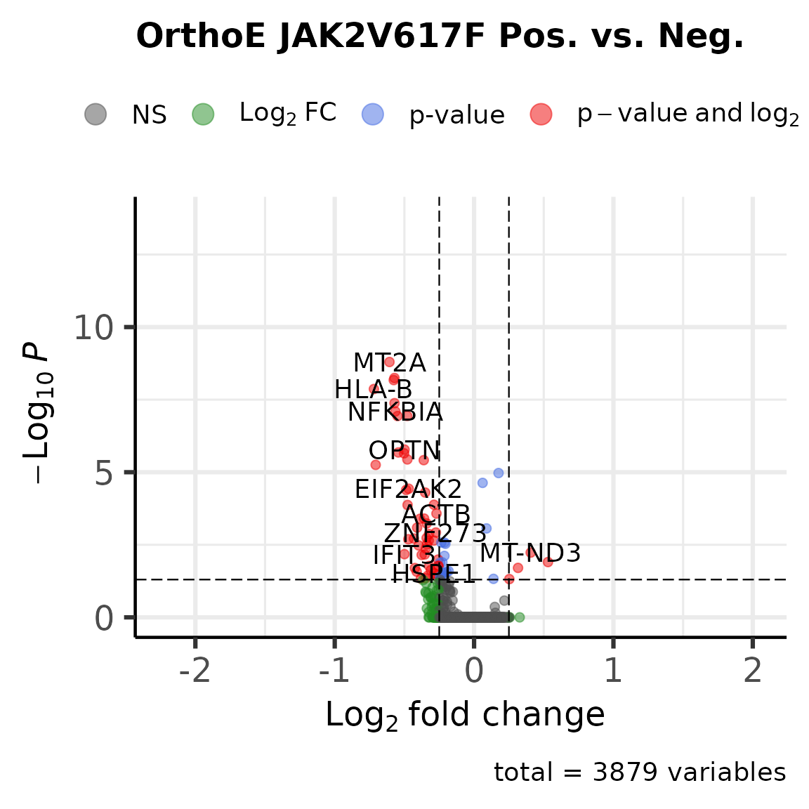

Analysis of MPN Data
MPN_SIGURD.RmdLoading necessary packages.
suppressPackageStartupMessages(library(sigurd))
suppressPackageStartupMessages(library(SummarizedExperiment))
suppressPackageStartupMessages(library(ggplot2))
suppressPackageStartupMessages(library(Seurat))
suppressPackageStartupMessages(library(ComplexHeatmap))
suppressPackageStartupMessages(library(circlize))
suppressPackageStartupMessages(library(grid))
suppressPackageStartupMessages(library(EnhancedVolcano))Analysis of MPN data
Here, we illustrate how to analysis genotyping data from MPN samples. The JAK2V617F mutation was genotyped for 6 MPN samples and 3 healthy controls.
This setup makes this analysis different from the previous analyses. Previously, only one sample was analysed at a time. Now, we load and analyse the samples simultaneously.
Loading MPN data
Now, we load the JAK2V617F data and plot the mutated cells on the UMAP.
Since we are loading multiple samples, this code is more complicated than the code for the MAESTER SW sample.
# Loading the scRNA-seq data.
scrna <- load_object("/data/MPN/exp/scRNA/MPN_mutations/SIGURD_paper/Paper_Figures/ZenodoFiles/Zenodo_Seurat_Object.rds")
# Loading the genotyping data.
# genotyping <- LoadingVarTrix_typewise(patient = "MPN", samples_file = "/data/MPN/exp/scRNA/MPN_mutations/SIGURD_paper/sigurd/data/DesignMatrix_VarTrix.csv", min_reads = 0, vcf_path = "/data/MPN/exp/scRNA/MPN_mutations/SIGURD_paper/sigurd/inst/extdata/JAK2V617F.vcf", type_use = "scRNAseq_Somatic", min_cells = 0, verbose = FALSE)
# amplicon <- LoadingVarTrix_typewise(patient = "MPN", samples_file = "/data/MPN/exp/scRNA/MPN_mutations/SIGURD_paper/sigurd/data/DesignMatrix_Amplicon.csv", min_reads = 0, vcf_path = "/data/MPN/exp/scRNA/MPN_mutations/SIGURD_paper/sigurd/inst/extdata/UCSC_JAK2V617F.vcf", type_use = "scRNAseq_Amplicon", min_cells = 0, verbose = FALSE)
# genotyping <- AmpliconSupplementing(scRNAseq = genotyping, amplicon = amplicon, verbose = FALSE)
# Filtering the genotyping object to remove false positives.
# genotyping <- Filtering(genotyping, min_cells_per_variant = 0, fraction_threshold = 0.21, cells_include = colnames(scrna), min_variants_per_cell = 1, reject_value = "NoCall", verbose = FALSE)
# We load the provided genotyping object.
genotyping <- load_object("/data/MPN/exp/scRNA/MPN_mutations/SIGURD_paper/sigurd/data/MPN_JAK2V617F_Genotyping.rds")Combining Seurat and SIGURD
Now, we add the genotyping information to the Seurat object.
scrna <- SetVariantInfo(SE = genotyping, seurat_object = scrna)## [1] "You did not supply a vector of variants. All variants will be used."Visualisation
We visualize the genotyping information on the UMAP.
# Plotting the mutated cells on the UMAP.
scrna$JAK2_p.V617F_c.1849G.T_consensus <- factor(scrna$JAK2_p.V617F_c.1849G.T_consensus, levels = c("Ref", "Alt"))
jak2_cells <- sum(scrna$JAK2_p.V617F_c.1849G.T_consensus == "Alt", na.rm = TRUE)
ref_cells <- sum(scrna$JAK2_p.V617F_c.1849G.T_consensus == "Ref", na.rm = TRUE)
all_cells <- ncol(scrna)
p <- DimPlot(scrna, group.by = "JAK2_p.V617F_c.1849G.T_consensus", reduction = "INTE_UMAP", order = TRUE, pt.size = 1, raster = FALSE, na.value = "grey95", cols = c(Alt = "#aa0051", Ref = "#79b938")) +
ggtitle(paste0("Alt: ", jak2_cells, ", Ref: ", ref_cells, ", All: ", all_cells)) +
xlab("UMAP 1") + ylab("UMAP 2") + scale_color_manual(breaks = c("Alt", "Ref"), values = c("#aa0051", "#79b938"), na.value = "grey95") +
theme(legend.position = "top")## Scale for colour is already present.
## Adding another scale for colour, which will replace the existing scale.
print(p)We determine DEGs between the JAK2V617F and WT cells.
Now, we determine the DEGs between the JAK2V617F cells and the wild type cells for the Orthochromatic Erythroblasts.
scrna_orthoe <- subset(scrna, celltype == "Orthochromatic Erythroblasts" & condition != "HC")
degs <- FindMarkers(scrna_orthoe, group.by = "JAK2_p.V617F_c.1849G.T_consensus", ident.1 = "Alt", ident.2 = "Ref", logfc.threshold = 0)
degs <- data.frame(degs, gene = rownames(degs))
degs_up <- nrow(subset(degs, avg_log2FC > 0.25 & p_val_adj < 0.05))
degs_down <- nrow(subset(degs, avg_log2FC < -0.25 & p_val_adj < 0.05))
EnhancedVolcano(degs, x = "avg_log2FC", y = "p_val_adj", lab = degs$gene, FCcutoff = 0.25, pCutoff = 0.05, title = "OrthoE JAK2V617F Pos. vs. Neg.",subtitle = NULL)
Combining the JAK2V617F data with the MT data.
We combine the JAK2V617F SIGURD object with the MT object. Cells and variants in both objects are combined.
To save time, we are only processing a single sample. All other samples are processed equally. Since the genotyping object is a list, it is easily processed using parallel computing.
First, we load and filter the mitochondrial variant information.
# Loading the data.
# genotyping_mt <- LoadingMAEGATK_typewise(patient = "MPN1", samples_file = "/data/MPN/exp/scRNA/MPN_mutations/SIGURD_paper/sigurd/data/DesignMatrix_MT.csv", min_cells = 0, cells_include = colnames(scrna), type_use = "scRNAseq_MT", verbose = FALSE)
# genotyping_mt <- Filtering(genotyping_mt, min_variants_per_cell = 1, min_cells_per_variant = 2, fraction_threshold = 0.05, cells_include = colnames(scrna), verbose = FALSE)
# Adding the JAK2V617F information.
# genotyping_MPN1 <- Filtering(genotyping, cells_include = grep("MPN1", colnames(genotyping), value = TRUE))
# genotyping_mt <- CombineSEobjects(genotyping_MPN1, genotyping_mt)
# We load the Zenodo File. This is equivalent to the way we do it above.
genotyping_mt_all <- load_object("/data/MPN/exp/scRNA/MPN_mutations/SIGURD_paper/Paper_Figures/ZenodoFiles/scrna_genotyping.rds")
genotyping_mt <- genotyping_mt_all[["MPN1"]]
genotyping_mt <- Filtering(genotyping_mt, min_variants_per_cell = 1, min_cells_per_variant = 2, fraction_threshold = 0.05, cells_include = colnames(scrna), verbose = FALSE)MPN VOIs and Diversity
Now, we select the mtVOIs. We then determine the clonal lineages and plot the results on a heatmap.
We subset the cells to only include the erythroid cells.
# Subset to erythroid cells.
erythroid_cells <- colnames(subset(scrna, celltype_merged == "ErythroidCells"))
genotyping_mt <- Filtering(genotyping_mt, cells_include = erythroid_cells)## [1] "We remove all cells not in the allow list."
## [1] "We remove all the variants that are always NoCall."
# Selecting the mtVOIS.
mt_vois <- VariantSelection_Quantile(genotyping_mt, min_coverage = 1, verbose = FALSE)
# Determining the clonal lineages.
genotyping_mt <- ClonalDefinition(se = genotyping_mt, variants_ls = list(mt_vois), verbose = FALSE)Visualisation of mtVOIs and Clonal Lineages
We now plot the variants of interest and the clonal lineages.
# Generating a heatmap.
colors_lineage <- c("C1" = "#563e00", "C2" = "#dec234", "C3" = "#e23856", "C4" = "#7f0073", "C5" = "#006639", "C6" = "#b1db8e", "C7" = "#00348f", "Negative" = "black")
ha <- columnAnnotation(Clones = colData(genotyping_mt)[,"Clones"],
col = list(Clones = colors_lineage),
annotation_name_gp = gpar(fontsize = 10, fontface = "plain"),
annotation_legend_param = list(Clones = list(nrow = 1, title = "")))
fraction <- as.matrix(assays(genotyping_mt)[["fraction"]])[mt_vois, ]
hm <- Heatmap(fraction,
name = "VAF",
row_title_gp = gpar(fontsize = 12),
row_names_gp = gpar(fontsize = 10),
row_names_max_width = unit(16, "cm"),
column_title = "MPN1",
column_title_gp = gpar(fontsize = 12),
column_names_gp = gpar(fontsize = 10),
col = colorRamp2(seq(0, round(max(fraction, na.rm = TRUE)), length.out = 9), c("#FCFCFC", "#FFEDB0", "#FFDF5F", "#FEC510", "#FA8E24", "#F14C2B", "#DA2828", "#BE2222", "#A31D1D")),
show_column_dend = FALSE,
show_row_names = TRUE,
show_column_names = FALSE,
cluster_columns = TRUE,
cluster_rows = FALSE,
heatmap_legend_param = list(border = "#000000", grid_height = unit(10, "mm"),
direction = "horizontal"),
bottom_annotation = ha,
border = TRUE,
use_raster = TRUE,
show_heatmap_legend = TRUE)
draw(hm, annotation_legend_side = "bottom")Calculating clonal diversity.
We calculate the clonal diversity for the sample MPN1 as an example.
clonal_diversity <- ClonalDiversity(genotyping_mt, grouping = "Clones", diversity_measure = "EffectiveSpecies", verbose = FALSE)
print(paste0("Clonal Diversity in Effective Number of Species for MPN1: ", clonal_diversity))## [1] "Clonal Diversity in Effective Number of Species for MPN1: 6.72545022391521"Repeating the MT analysis for all samples.
We now repeat the MT analysis for all samples. This will take considereable time.
We speed the analsyis up by using parallel computing. Since the Zenodo file was already loaded, we save time here.
# We get all patients present in the design matrix.
design_matrix <- read.table("/data/MPN/exp/scRNA/MPN_mutations/SIGURD_paper/sigurd/data/DesignMatrix_MT.csv", header = TRUE, sep = ",")
patients <- design_matrix$patient
# genotyping_mt_all <- parallel::mclapply(patients, LoadingMAEGATK_typewise, samples_file = "/data/MPN/exp/scRNA/MPN_mutations/SIGURD_paper/sigurd/data/DesignMatrix_MT.csv", min_cells = 0, cells_include = colnames(scrna), type_use = "scRNAseq_MT", verbose = FALSE, mc.cores = length(patients))
# names(genotyping_mt_all) <- patients
# We already loaded the data.
genotyping_mt_all <- parallel::mclapply(genotyping_mt_all, Filtering, min_variants_per_cell = 1, min_cells_per_variant = 2, fraction_threshold = 0.05, cells_include = erythroid_cells, verbose = FALSE, mc.cores = length(patients))Selecting variants of interest for all samples
We select variants of interest for all samples.
# Selecting the mtVOIS.
mt_vois_all <- parallel::mclapply(genotyping_mt_all, VariantSelection_Quantile, min_coverage = 1, verbose = FALSE, mc.cores = length(patients))
# Determining the clonal lineages. This takes very long. We use parallel computing to process all samples simultaneously.
genotyping_mt_all <- parallel::mclapply(1:length(mt_vois_all), function(x){
sample_use <- names(mt_vois_all)[x]
clones <- ClonalDefinition(se = genotyping_mt_all[[sample_use]], mt_vois_all[sample_use], verbose = FALSE)
return(clones)
}, mc.cores = length(mt_vois_all))
names(genotyping_mt_all) <- patients
save_object(genotyping_mt_all, "/data/MPN/exp/scRNA/MPN_mutations/SIGURD_paper/Paper_Figures/ZenodoFiles/genotyping_mt_all.rds.lz4", "lz4")Calculating the diverstiy for all samples
# We load the previous results.
genotyping_mt_all <- load_object("/data/MPN/exp/scRNA/MPN_mutations/SIGURD_paper/Paper_Figures/ZenodoFiles/genotyping_mt_all.rds.lz4")
clonal_diversity_all <- unlist(lapply(genotyping_mt_all, ClonalDiversity, grouping = "Clones", diversity_measure = "EffectiveSpecies", verbose = FALSE))
clonal_diversity_all <- data.frame(Sample = names(genotyping_mt_all), EffectiveSpecies = clonal_diversity_all)
knitr::kable(clonal_diversity_all, format="html")| Sample | EffectiveSpecies | |
|---|---|---|
| MPN1 | MPN1 | 6.72545 |
| MPN2 | MPN2 | 35.77652 |
| MPN3 | MPN3 | 24.17242 |
| HC1 | HC1 | 63.41134 |
| HC2 | HC2 | 873.95614 |
| HC3 | HC3 | 216.72850 |
| MPN6 | MPN6 | 10.98086 |
| MPN4 | MPN4 | 14.85520 |
| MPN5 | MPN5 | 42.10990 |